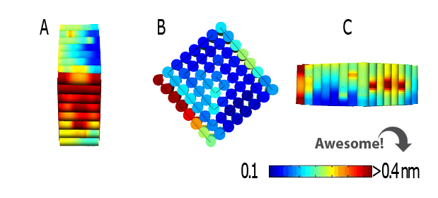
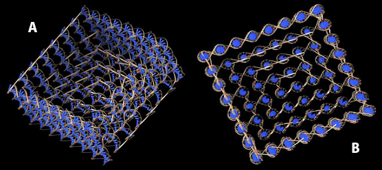
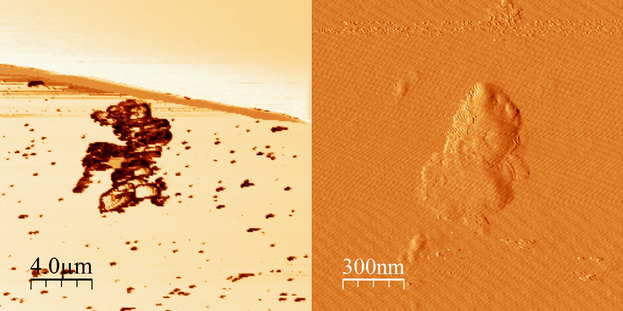
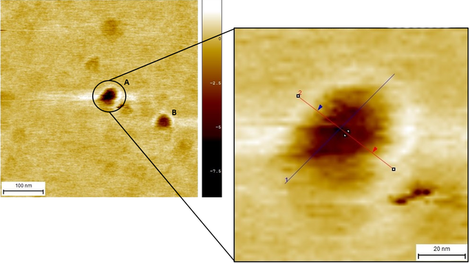
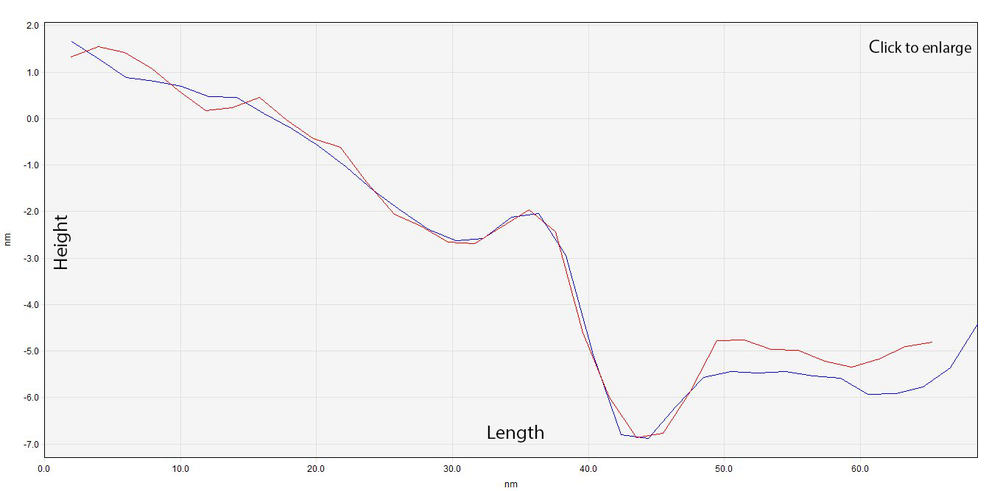
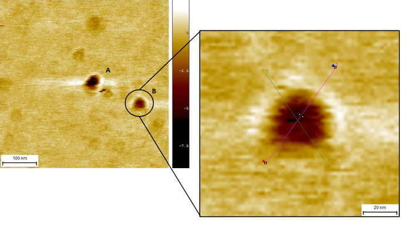
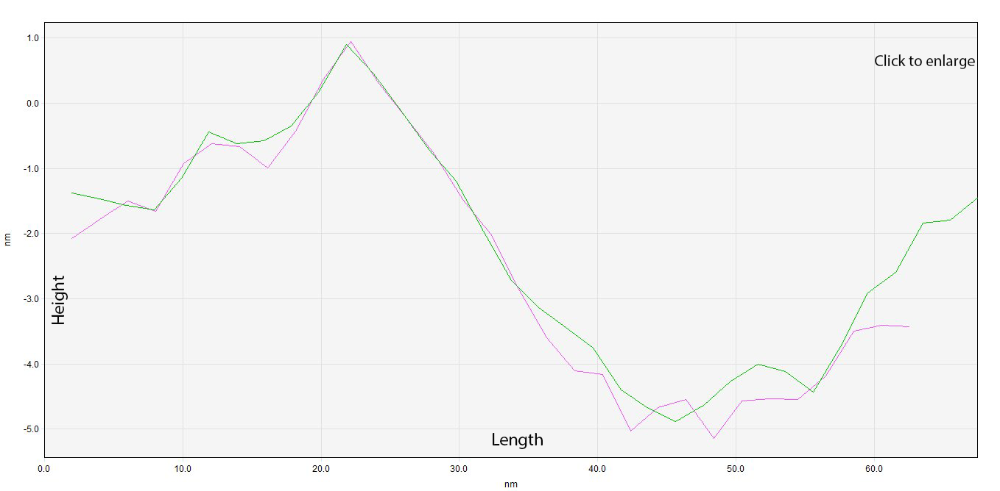
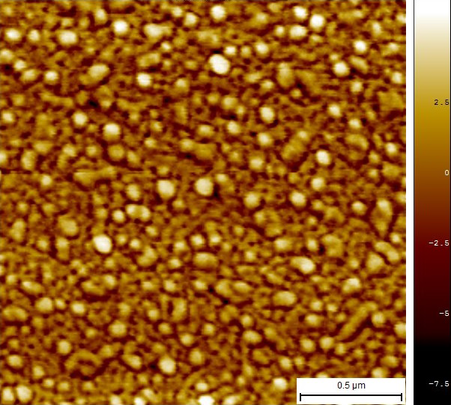
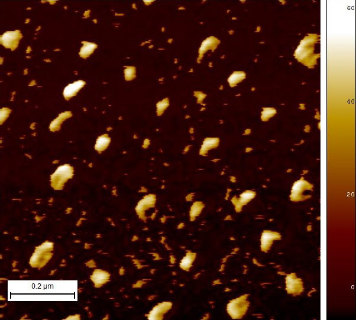
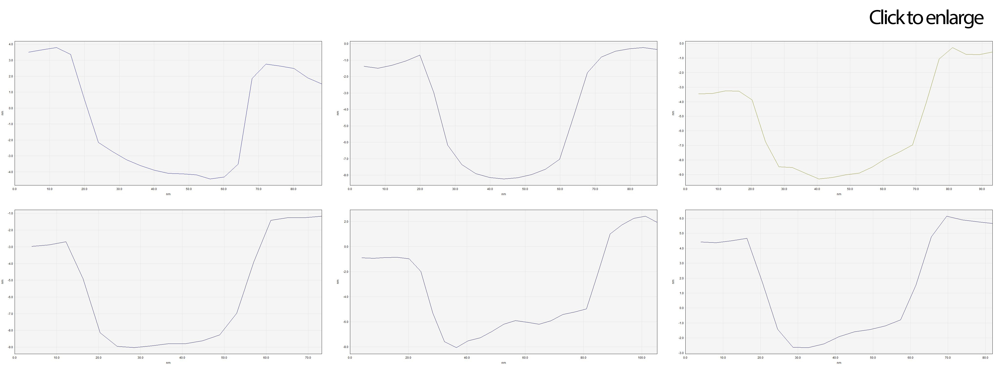

Here you can find the results from the various experiments made in our attempt to prove that our design is, in overall, feasible.
After finishing our design in CaDNAno, the box (device) was modeled with two different softwares. This with the purpose of verifying its adequate design and stability.
CanDo
Aside from confirming that our device had the desired structure, CanDo also revealed its fluctuation levels. (Image 1). The .json file from CanDNAno was used as input.
Image 1. Graphic representation of the fluctuations in the device obtained from CanDo.
The representation showed several fluctuations that ranged from 0.1 nm to 0.4 nm in different sections of the model. The low level of fluctuations and movement of the device imply that the structure can be considered stable enough to be worked with.
UCSF Chimera
This software is a pdb viewer, which allows us to visualize and analyze molecular structures in an interactive way. Just as CanDo, it provided us three-dimensional representations of the structure of the device.
Image 2 was obtained from the UCSF Chimera viewer, using a pdb file obtained from CanDo. The same structure as before is appreciated, but here the double helixes that conform the device are visualized, as well as the way they intersect each other.
Image 2. (A) Lateral view and (B) superior view of the device obtained from Chimera.
Notice that, in both softwares, the device seems to lack of the single strands that should overhang from its base. This is because CanDo omits such sequences due to them being single stranded. UCSF Chimera does this too, considering the pdb file used was extracted from CanDo.
It was decided to, first, test the third option from the different construction protocols. That is, making one single folding reaction where all scaffolds and staples were included. Despite having several folding reactions (reactions #1 to #5), each one with a different concentration of magnesium chloride, none of them showed what we expected. Instead, different forms not located in our expected range of results and agglomerates, as those seen in Image 3, were seen.
Image 3. Micrographs in AFM of folding reaction #1 (45-12-10).
Consequently, a different approach was taken and the same folding reaction was used, but with an excess of fifty staples per scaffold. Another important fact was that this reaction (reaction #6) went through a different and longer process inside the thermocycler. Image 4 presents the results of two outstanding small structures (structures A and B) that are within our expected range of results.
In order to analyze these micrographs, a software called SPIP was used. This software allowed us to set profiles with the purpose of measuring the different particles that we believe are part of our device. A close-up on structure A can be seen in Image 4, where two profiles (shown in blue and red) were placed to measure the structures.
Image 4. Close-up of structure A with profile 1A (blue) and profile 2A (red).
These two profiles, named Profile A1 and Profile A2, were compared in order to look for similar measures, this is shown in Graph 1. It is remarkable how both show similar patterns in similar points, which tells us that the figure tends to have a regular shape. Thus, meaning that there is a high possibility this is in fact our device. The assymetric depression can be explained by a range of error in the readings of the AFM (because of disturbances, problems with the machine itself, or both), or the design of the device, like in the Self-assembly of a nanoscale DNA box with a controllable lid, (Andersen et al., 2009).
Graph 1. Overlapping of profile A1 (blue) and profile A2 (red).
After analyzing Structure A, our attention was redirected to Structure B because of the obvious similarities in size. A close-up (Image 5) helped us to delimitate the edges of our device in order to use two new profiles to analyze and measure (Graph 2). Notice how, despite having a distorted structure, graphs 1 and 2 show a site where hollowness can be observed.
Image 5. Close-up of structure B with profile 1B (green) and profile 2B (pink).
Graph 2. Overlapping of profile B1 (green) and profile B2 (pink).
This reaction (Image 6) showed many structures. Despite most of them having a similar size and structure, none of them seemed to be hollow. Therefore, we can't be really sure if those are in fact our device.

Image 6. Micrograph in AFM of reaction #7
This is, what we think, the folding reaction with the best results yet. Image 7 shows up close a sample that had an adsorption time of 2 minutes onto the mica.
Image 7. Micrograph in AFM of reaction #10 with 2 min of adsorption.
Since the sample in Image 7 seemed to be highly concentrated, another sample was prepared with an adsorption time of only 1 minute. This last sample (Image 8) appears to be cleaner and various structures that resemble our device can be seen.
Image 8. Micrograph in AFM of reaction #10 with 1min of adsorption.
The size of several "cubes" were measured just as before by placing profiles over them and using SPIP. Graph 3 shows a compilation of some of those. They show not only similarities in size and structure, but also a hollow site. That's great!
It is not difficult to notice that the experimentally measured device sizes do not exactly match the stipulated in the computational model. Nevertheless, it is important to remark the wide amount of parameters influencing the system. At this scale, both the width of the AFM cantilever’s tip (~10 nm) and the cations (from the MgCl2) attached to the DNA phosphate group increase the uncertainty of our measurements.
Graph 3. Profiles of different structures found in Image 7.